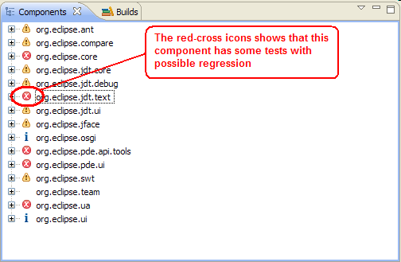
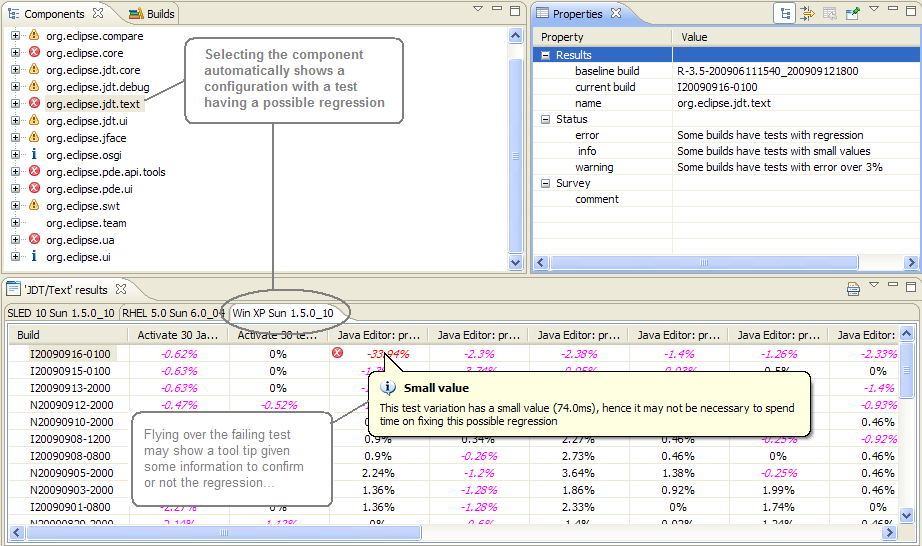
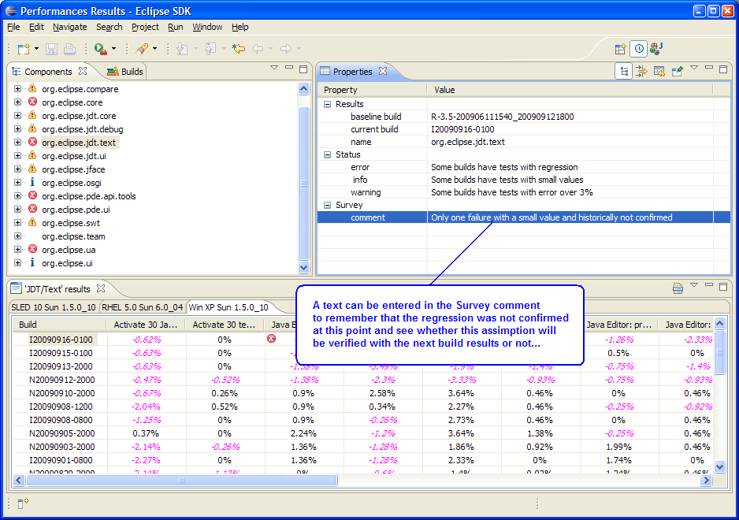

While verifying a build results, the first thing to do is to look for failures. The tool helps to know rapidly which components have failure showing a red-cross icon in the Components view:

When clicking on one of the component having error(s), the tool automatically selects the first configuration (i.e. test machine) which has an error in its last build results. Then, flying over the failures may give a first indication whether the regressions are confirmed or not.
In the following example, a tool tip is displayed saying that the deviation has a small value and may be not enough important to report a bug:

Then this analyze can be stored to see whether this scenario will still have a similar error on the next build performance run:
